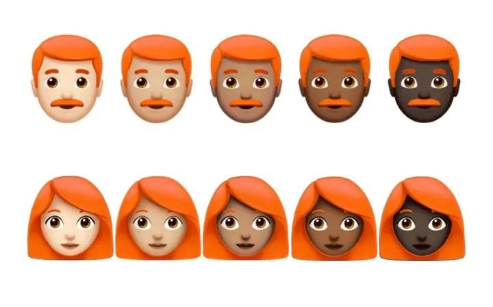
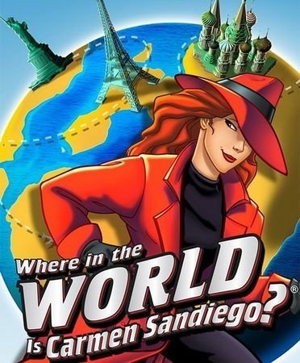
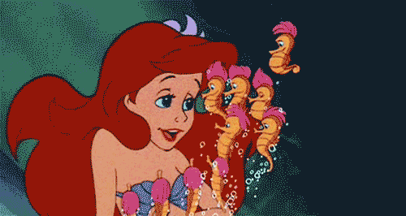
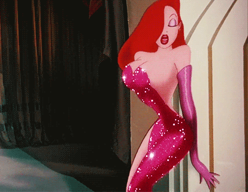
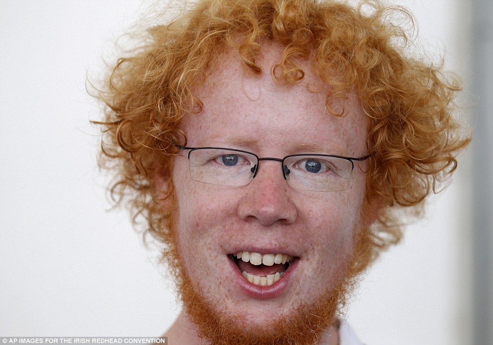
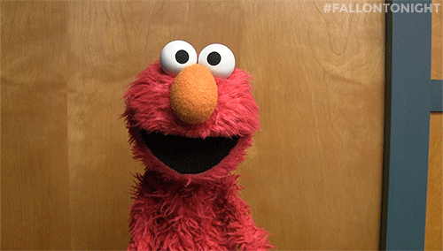

In fact, we observe significant variation within the group...
Cartoons lucky enough to be drawn with red hair tend to be attractive:



While humans born with the hair color tend to be less lucky...

Although there are two exceptions:

Leaving the character realm, we must consider readheads that are neither born nor drawn, but are CREATED